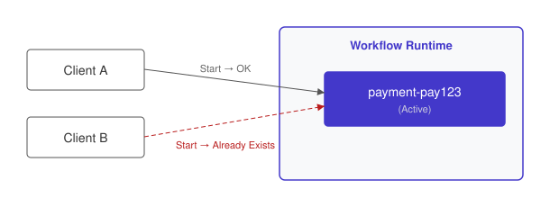

The Execution Singleton (Durable Lock)
Leverage the workflow runtime’s guarantee that only one execution with a given ID can be active, using workflow existence as a distributed coordination primitive.
Intent. Ensure that exactly one instance of a process is running for a given business key at any time. Instead of implementing distributed locking with Redis, ZooKeeper, or database advisory locks, you use the workflow runtime’s built-in uniqueness constraint: one active workflow per ID.
Motivation. A payment processing system receives a charge request. Due to network retries, webhook redeliveries, or simply a user double-clicking the "Pay" button, the same payment ID may arrive multiple times. Processing a payment twice means double-charging a customer — an incident that requires manual intervention, a refund, and an apology email.
The traditional defense is a distributed lock. Acquire it before processing, release it after. But distributed locks are one of the most deceptively difficult primitives in distributed systems. Martin Kleppmann wrote extensively about this in the Redlock debate with Redis’s creator: a lock based on wall-clock TTLs can expire while the holder is still processing (a GC pause, a slow network, a page fault). The holder continues, believing it holds the lock, while another process has already acquired it. Both processes charge the payment.
ZooKeeper ephemeral nodes solve the expiry problem but introduce operational
complexity — you need a ZooKeeper cluster, and the session timeout behavior
requires careful tuning. Database advisory locks (SELECT … FOR UPDATE or
pg_advisory_lock) tie the lock to a database connection; if the connection
drops, the lock is released, which may or may not be what you want depending on
whether the payment API call was already in flight.
All of these approaches treat locking as an infrastructure problem separate from the business logic. The lock acquisition, the payment processing, and the lock release are three distinct steps that must be coordinated, and the failure modes live in the gaps between them.
The Pattern

The core idea is a workflow whose ID is deterministically derived from the
business key — payment-{payment_id}, for example. The workflow engine
enforces a hard constraint: at most one active workflow with a given ID can exist at any
time. This uniqueness spans all workflow types, not just the same type — a
payment-123 workflow and a refund-123 workflow would not collide, but two
workflows of any type both using ID 123 would. This is why type-specific
prefixes like payment-{id} are a best practice. A second start request with the same ID is rejected by default
— the caller receives a duplicate-start error (WorkflowExecutionAlreadyStarted in Temporal). This is the
deduplication guarantee: the caller handles the rejection and can query or await
the existing execution instead of starting a duplicate.
The caller — an API handler, a queue consumer, a webhook receiver — starts the
workflow with the deterministic ID. It doesn’t need to check whether the
workflow already exists; the runtime handles deduplication.
Traditionally, you’d call SET payment:{id} locked NX EX 300 in Redis —
set the key only if it doesn’t exist, with a 300-second expiry. If the SET
returns OK, you hold the "lock" and proceed. But if processing takes longer
than the TTL (a slow third-party API, a GC pause), the key expires and another
process acquires the lock. You now have two processes charging the same payment.
There’s no TTL value that’s simultaneously short enough to recover from crashes
and long enough to survive slow processing.
With Durable Execution. The payment workflow uses the payment ID as the workflow ID. Deduplication is a property of the runtime, not application code:
/**
* Payment processing workflow. The workflow ID is `payment-${paymentId}`,
* so the runtime guarantees at most one active execution per payment.
*
* If a second start request arrives for the same payment ID, the runtime
* returns the existing execution — no duplicate processing.
*/
export async function paymentWorkflow(paymentId: string, amount: number): Promise<string> {
const transactionId = await processPayment(paymentId, amount); (1)
await sleep('5s'); (2)
await markPaymentComplete(paymentId, transactionId); (3)
return transactionId; (4)
}| 1 | The payment activity runs exactly once per payment ID — duplicates are prevented by the workflow ID uniqueness constraint, not by application code. |
| 2 | The sleep extends the deduplication window. During this 5-second delay,
any duplicate start request still returns the existing execution. |
| 3 | Post-processing completes within the same workflow — the ID remains occupied. |
| 4 | When the workflow returns, the ID is released. Future starts with the same ID depend on the workflow ID reuse policy. |
The paymentWorkflow function is deliberately simple — there’s no locking
code because there’s no lock. The caller starts the workflow with ID
payment-${paymentId}. If a workflow with that ID is already running, the
runtime rejects the duplicate start. The caller catches the
duplicate-start error and can query or await the
already-running workflow instead of creating a duplicate.
The uniqueness guarantee isn’t based on TTLs or wall-clock time. It’s a
property of the workflow’s lifecycle: the ID is occupied from the moment the
workflow starts until it ends. There’s no expiry
window, no GC-pause vulnerability, no split-brain scenario. If the worker
crashes during processPayment, the workflow engine replays execution on
another worker and continues — the ID remains occupied throughout.
The sleep('5s') in the example represents post-processing delay (settlement
confirmation, ledger reconciliation). During this sleep, any duplicate start
request for the same payment ID still returns the existing execution. The
deduplication window is exactly the workflow’s lifetime, which is exactly the
duration of the business operation it protects.
Consequences. The Execution Singleton eliminates distributed locking infrastructure entirely. No Redis cluster to operate, no TTL values to tune, no lock-expiry edge cases to handle in application code. The workflow engine’s uniqueness guarantee is stronger than any TTL-based lock because it’s tied to the workflow’s lifecycle, not to a timer.
The trade-off is that the "lock" exists only while the workflow is running.
For very short operations (sub-second), the overhead of starting a workflow
may exceed the overhead of a Redis SETNX. If your deduplication window needs to
extend beyond the workflow’s completion — for example, you want to reject
duplicate payments for 24 hours after the first one completed — you need to
configure what happens when a workflow ID is reused. Temporal provides two controls:
the ID reuse policy governs what happens after a workflow has closed
(REJECT_DUPLICATE prevents reuse entirely, ALLOW_DUPLICATE_FAILED_ONLY
allows reuse only after failure), while the ID conflict policy governs what
happens when a workflow is still running (FAIL rejects the start,
USE_EXISTING returns the running execution, TERMINATE_IF_RUNNING kills the
old one and starts fresh). The default for running workflows is rejection.
Another consideration: the Execution Singleton guarantees that only one workflow
with a given ID is active, but it doesn’t prevent concurrent starts from
racing. Two clients can both call StartWorkflow at the same instant. The
platform ensures only one succeeds, but both clients may need to handle the
"already exists" response. Note that a duplicate start doesn’t always produce an
error — the behavior is configurable. Some platforms and SDK configurations
return a handle to the existing execution instead of raising an error (Temporal’s
USE_EXISTING conflict policy, for example). Either way, the duplicate-start
response is the expected outcome, not an exceptional condition.
Distinction from the Entity. Both patterns use a deterministic workflow ID derived from a business key, and they’re almost always combined. The difference is what the workflow does. An Entity (Chapter 1) sits in an event loop, accepting commands indefinitely — it models a thing. The Execution Singleton is the uniqueness constraint itself — it ensures only one workflow per key is active. You can have an Execution Singleton that isn’t an Entity (a one-shot payment workflow), and in theory an Entity without singleton semantics, though in practice you’ll rarely want one.
Known Applications
-
Payment deduplication — workflow ID is
payment-{payment_id} -
Singleton scheduled jobs — one
daily-reportworkflow at a time -
Per-user rate limiting — one
user-action-{user_id}workflow per rate window -
Leader election — the workflow that’s running is the leader
Related Patterns